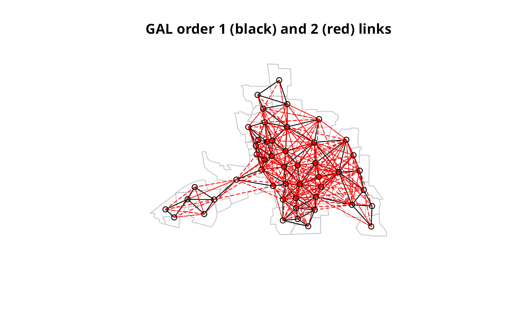

Higher order neighbours lists
nblag.RdThe function creates higher order neighbour lists, where higher order neighbours are only lags links from each other on the graph described by the input neighbours list. It will refuse to lag neighbours lists with the attribute self.included set to TRUE. nblag_cumul cumulates neighbour lists to a single neighbour list (“nb” object).
Author
Roger Bivand Roger.Bivand@nhh.no and Giovanni Millo
Examples
columbus <- st_read(system.file("shapes/columbus.gpkg", package="spData")[1], quiet=TRUE)
col.gal.nb <- read.gal(system.file("weights/columbus.gal", package="spData")[1])
coords <- st_coordinates(st_centroid(columbus))
#> Warning: st_centroid assumes attributes are constant over geometries
summary(col.gal.nb, coords)
#> Neighbour list object:
#> Number of regions: 49
#> Number of nonzero links: 230
#> Percentage nonzero weights: 9.579342
#> Average number of links: 4.693878
#> Link number distribution:
#>
#> 2 3 4 5 6 7 8 9 10
#> 7 7 13 4 9 6 1 1 1
#> 7 least connected regions:
#> 1 6 31 39 42 46 47 with 2 links
#> 1 most connected region:
#> 20 with 10 links
col.lags <- nblag(col.gal.nb, 2)
print(col.lags)
#> [[1]]
#> Neighbour list object:
#> Number of regions: 49
#> Number of nonzero links: 230
#> Percentage nonzero weights: 9.579342
#> Average number of links: 4.693878
#>
#> [[2]]
#> Neighbour list object:
#> Number of regions: 49
#> Number of nonzero links: 406
#> Percentage nonzero weights: 16.90962
#> Average number of links: 8.285714
#>
#> attr(,"call")
#> nblag(neighbours = col.gal.nb, maxlag = 2)
summary(col.lags[[2]], coords)
#> Neighbour list object:
#> Number of regions: 49
#> Number of nonzero links: 406
#> Percentage nonzero weights: 16.90962
#> Average number of links: 8.285714
#> Link number distribution:
#>
#> 1 2 3 4 5 6 7 8 9 10 11 12 13 14 15 16 17
#> 1 2 5 4 2 3 5 4 2 3 7 3 4 1 1 1 1
#> 1 least connected region:
#> 36 with 1 link
#> 1 most connected region:
#> 25 with 17 links
plot(st_geometry(columbus), border="grey")
plot(col.gal.nb, coords, add=TRUE)
title(main="GAL order 1 (black) and 2 (red) links")
plot(col.lags[[2]], coords, add=TRUE, col="red", lty=2)

cuml <- nblag_cumul(col.lags)
cuml
#> Neighbour list object:
#> Number of regions: 49
#> Number of nonzero links: 636
#> Percentage nonzero weights: 26.48896
#> Average number of links: 12.97959
run <- FALSE
if (require(igraph, quietly=TRUE) && require(spatialreg, quietly=TRUE)) run <- TRUE
if (run) {
W <- as(nb2listw(col.gal.nb), "CsparseMatrix")
G <- graph_from_adjacency_matrix(W, mode="directed", weight="W")
D <- diameter(G)
nbs <- nblag(col.gal.nb, maxlag=D)
n <- length(col.gal.nb)
lmat <- lapply(nbs, nb2mat, style="B", zero.policy=TRUE)
mat <- matrix(0, n, n)
for (i in seq(along=lmat)) mat = mat + i*lmat[[i]]
G2 <- distances(G)
print(all.equal(G2, mat, check.attributes=FALSE))
}
#> Warning: lag 6 neighbour object has 5 sub-graphs
#> Warning: lag 7 neighbour object has 20 sub-graphs
#> Warning: lag 8 neighbour object has 36 sub-graphs
#> Warning: lag 9 neighbour object has 44 sub-graphs
#> [1] TRUE